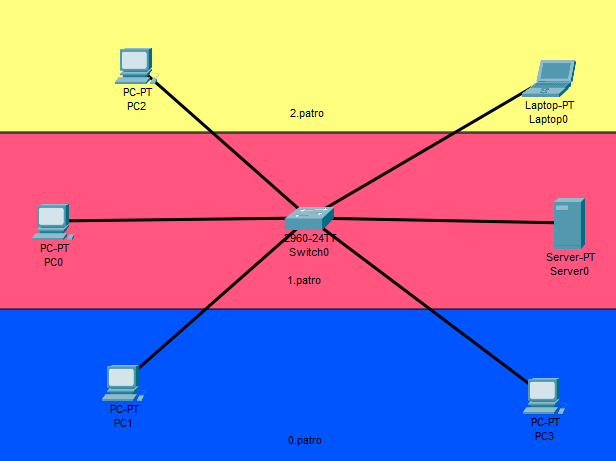
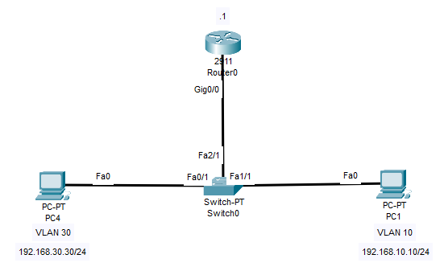

A
B
C
D
VLAN, také Virtual LAN, Virtual Local Area Network je velmi zjednošeně řečeno virtuální rozdělení sítě na L2.
Pro CCNA definici je třeba si vysvětlit dva pojmy:
Defaultně switch dává všechny své interfaci do jedné a té samé broadcastové domény. Pokud tedy bez žádných dalších extra nastavení budeme chtít mít více broadcastových domén, budeme muset koupit další switch. Pokud jsme ale skrblíci a nechceme utrácet, můžeme síť rozdělit do dvou VLAN, a tím v podstatě docílit toho samého, jako kdybychom koupili další switch.
Na zjednodušeném schématu sítě najdeme právě jednu broadcastovou doménu.
Je důležite také zmínit, že switch běžně neposílá data z jedné VLANy do druhé.
VLAN nastavíme tak, že na switchi přidělíme určitému interfacu typ portu (ACCESS/TRUNK).
Pokud je switchport nastavený na ACCESS, tak k němu můžeme přiradit právě jednu VLANu.
Do zařízení pak budou moci proudit jen ty rámce, které jsou ve stejné VLAN.
Switch(config)#vlan {VLAN_ID} //Vlan {VLAN_ID}, VLAN_ID je jakékoliv číslo od 2-1001 a 1006-4094.
Switch(config-vlan)#name {name} //Nastavení jména není povinné, je ale dobré jej uvádět.
Switch(config)#interface {interface}
Switch(config-if)#switchport mode access
Switch(config-if)#switchport access vlan 20 //pozn. Pokud VLAN ještě není vytvořená, switch ji automaticky vytvoří.
% Access VLAN does not exist. Creating VLAN 20.
Switch#show vlan brief
| VLAN | Name | Status | Ports |
|---|---|---|---|
| 1 | default | active | Fa1/1, Fa2/1, Fa3/1, Fa4/1, Fa5/1 |
| 10 | Sales | active | |
| 20 | VLAN0020 | active | Fa0/1 |
| 1002 | fddi-default | active | |
| 1003 | token-ring-default | active | |
| 1004 | fddinet-default | active | |
| 1005 | trnet-default | active |
Pakliže se dostaneme do situace, kdy máme více switchu, na kterých jsou nastavene VLANy a chceme, aby mezi dvěma stejnýma VLANama probíhala komunikace (viz ukázka), použijeme Trunk porty.
Mohli bychom mezi switchi nastavit též Access port a přidelit mu VLANu, ale toto řesení je neefektivni, protože co VLANa, to médium, a tudíž kdyby tam těch VLAN bylo víc tak by to finančně nemuselo být vůbec pohodlné.
Efektivní řešení je vytvoření tzv. Trunk portu, který umožňuje přenášet data různých VLAN po jednom médiu.
Jestliže tedy posíláme rámec přes trunk, tak switch daný rámec označí pomocí VLAN ID (to číslo, které zadáváme při vytváření VLANy).
Když poté za pomocí trunku dorazí rámec na další switch, tak ten switch pak už bude vědět z jaké VLANy rámec pochází a podle toho ho bude moci poslat dál.
Na Cisco switchích se můžeme setkat s dvěma Trunking protocoly:
802.1Q přidává do Ethernetové hlavičky 4bytový VLAN Header (tag), to pak pomáhá switchi určit z které VLANy daný rámec pochází.
VLAN Header obsahuje 4 další pole:
Pro správné fungování trunku je třeba mít na obou koncích stejné:
Je typ VLANy, která se při průchodem přes trunk neoznačuje. Když pak switch dostane neoznačený rámec, tak předpokládá, že patří právě Native VLAN, proto je nutné aby Native VLAN byla na obou koncích trunku stejná.
Za normálních okolností je Nativní VLAN - VLAN 1, to lze ale změnit viz. Konfigurace Trunku.
Switch(config-if)#interface {interface}
Switch(config-if)#switchport mode trunk
Switch#show interface trunk
Velmi doporučuji si tenhle příkaz zapamatovat, hodí se při troubleshootingu.
Switch(config-if)#switchport trunk allowed vlan {VLAN_IDs | add | all | except | none | remove}
Switch(config-if)#switchport trunk allowed vlan 15,25 //Na trunk budou smět pouze VLAN 15 a 25.
Switch(config-if)#switchport trunk native vlan {VLAN_ID}
Je nutné, aby veškerá nastavení byla na obou koncích trunku stejná!
Lab zaměřený na základní konfiguraci společně s nastavením trunku můžete stáhnout zde.
Je forma speciálního útoku na síť, kdy se útočníkovi podaří dostat rámec z jedné VLAN do druhé bez použití Inter-VLAN routingu.
Funguje tak, že útočník je připojený k zařízení, který je u NATIVE VLAN, ten útočník poté vytvoří rámec, který bude dvakrát označený, jednou jeho VLAN (outer tag) a po druhé jeho cílovou VLAN.
Switch poté při průchodu na trunk první označení (outer tag) odebere, dalšímu switchi poté zbyde ten uměle vytvořený cílený tag a podle toho rámec pošle dál (do zařízení s cílenou VLAN).
Útok funguje pouze tehdy, když je útočník připojený na zařízení pod NATIVE VLAN.
Proti útoku se lze bránit tím, že Native VLAN přesuneme na nějakou jinou vlan-id, kterou nebudeme vůbec používat.
Chceme-li posílat rámce mezi VLANy, tak jednou z možností je použití ROAS - Router on a stick.
ROAS funguje tak, že mezi switchem a routrem se nastaví na interfacu switche trunk.
Na interfacu routeru se nakonfigurují subinterfaci.
Na těchto subinterfacech je nutné zadat číslo VLANy a IP adresu.
Pakliže PC1 (VLAN 10) bude chtít poslat data PC4 (VLAN 30), tak při odchodu ze switche na router bude rámec označen.
Router ví, že rámec s označením 10 je na jeho subinterfacu g0/0.10.
Router si dále všimne, že jeho dest IP adresa leží na subinterfacu g0/0.30.
Tudíž router nasměruje daný paket na subinterface g0/0.30 a switch bude daný rámec brát tak, že patří do VLAN 30 a dále ho nasměruje do PC4.
Switch(config)#int fa2/1
Switch(config-if)#switchport mode trunk
Switch(config-if)#switchport trunk allowed vlan {VLANs_ID}
Router(config)#interface {interface}
Router(config-if)#no shutdown //Nesmíme zapomenou zapnout nejdříve celý interface.
Router(config-if)#int {interface.X} //X je číslo sub interfacu,pro přehlednost doporučuju používat VLAN_ID.
Router(config-subif)#encapsulation dot1q {VLAN_ID}
Router(config-subif)#ip address A.B.C.D E.F.G.H
Příkazem říkáme, že rámce s daným VLAN_ID budou na tomhle subinterfacu a také specifikujeme trunking protokol a dále tomuto sub interfacu přiřazujeme IP adresu.
Lab na procvičení ROAS můžete stáhnout zde.
Často se při práci s VLAN můžete setkat s pojmy DTP a VTP. Tyto protokoly mají vždy něco automatizovat.
VTP je Cisco-propietary protokol, který propaguje nastavení VLAN, aby ostatní switche v síti přijaly existenci VLAN konfigurací.
Jak je psáno výše VTP nepropaguje za normálních okolností Extended VLANs (VLANs s id 1006-4094).
VTP protokol není v CCNA a v CCNP zkoušce a zas tolik se už nepoužívá. VTP má ale dopad na síť, takže by se o těchto dopadech mělo aspoň trochu vědět.
VTP je možno vypnout dle věku daného switche.
U starších zařízení se používá:
SW(config)#vtp mode transparent
U novějších zařízení se používá:
SW(config)#vtp mode off
Rozdíl mezi těmito příkazy je takový, že vtp mode transparent VTP zcela nevypne, kdežto vtp mode off jej zcela vypne.
Obě možnosti ale znemožní VTP detekci a propagování VLAN.
Pokud někdy budete mít s VLAN konfigurací problém, doporučuji zkontrolovat VTP status pomocí příkazu.
SW#show vtp status
DTP, jak už z názvu vyplývá, je protokol, který bude mít co dočinění s dynamickým nastavením Trunku.
DTP automaticky vyjedná, jaký trunking protokol se bude používat a taky jestli je daný port trunk.
Z bezpečnostního hlediska není doporučené DTP používat.
DTP se nastavuje na každém portu zvlášť.
Pokud je port v access módu, tak DTP jej nemůže nějak změnit.
Když je port v trunk módu, tak jej též DTP nezmění, ale může pomoct změnit jej i na druhé straně trunku.
switch(config-if)#switchport mode dynamic auto // přepne se do trunku, pokud dostane žádost. switch(config-if)#switchport mode dynamic desirable // posílá žádost o přesun do trunk modu.
Jestliže chceme používat trunk bez toho, aby se používalo DTP, lze jej zakázat pomocí příkazu:
switch(config-if)#switchport nonegotiate
| Nastavený mód | Access | Dynamic auto | Dynamic desirable | Trunk |
|---|---|---|---|---|
| access | access | access | nepoužívat | access |
| dynamic auto | access | access | trunk | trunk |
| trunk | nepoužívat | trunk | trunk | trunk |
| dynamic desirable | access | trunk | trunk | trunk |
| Příkazy | Popis | Mód |
|---|---|---|
| vlan {vlan-id} | Vytvoří VLAN a přepne do VLAN interfacu | Global Config |
| name {vlan-name} | Pojmenuje VLAN | VLAN interface |
| switchport mode {access | trunk | dynamic desirable | dynamic auto} | Přepne interface do modu | Interface |
| switchport nonegotiate | Vypne DTP na interfacu | Interface |
| switchport access vlan {vlan-id} | Přiřadí VLANu k danému interfacu | Interface |
| switchport trunk encapsulation {protocol} | Nastaví trunking protokol na switchi | Global Config |
| switchport trunk native vlan {vlan-id} | Nastaví Native VLAN | Interface |
| switchport trunk allowed vlan {add | all | except | remove} {vlan-id} | Nastaví povolené VLANy na trunku | Interface |
| encapsulation dot1q {VLAN_ID} | Nastaví sub interface pro danou VLAN | router - sub interface |
| vtp mode {transparent | off} | Vypne VTP | Global Config |
| show interfaces switchport | Zobrazí informace o interfaci | EXEC |
| show interfaces {interface-id} trunk | Zobrazí informace o truncích | EXEC |
| show vlan brief | Zobrazí informace o VLAN | EXEC |
| show vtp status | Zobrazí informace o VTP | EXEC |
VLAN je logické rozdělní sítě (fyzické uspořádání na ni nemá vliv).
Používá se tehdy, když chceme omezit kdo a k čemu má přístup, nebo chceme-li efektivně spravovat síť.
Při práci s VLAN se setkáme s dvěma druhy switchportů, Access port, u interfacu který míří většinou do koncových zařízení, a Trunk, u interfacu který se používá tehdy, když chceme přes jedno médium posílat rámec vícero VLAN.
Při nastavování trunk portu je třeba si hlavně dávat pozor na DTP, trunking protokol a Native VLAN - VLAN, která se při průchodem Trunkem neoznačuje.
Když chceme povolit komunikaci mezi VLAN, použijeme ROAS.
A
B
C
D